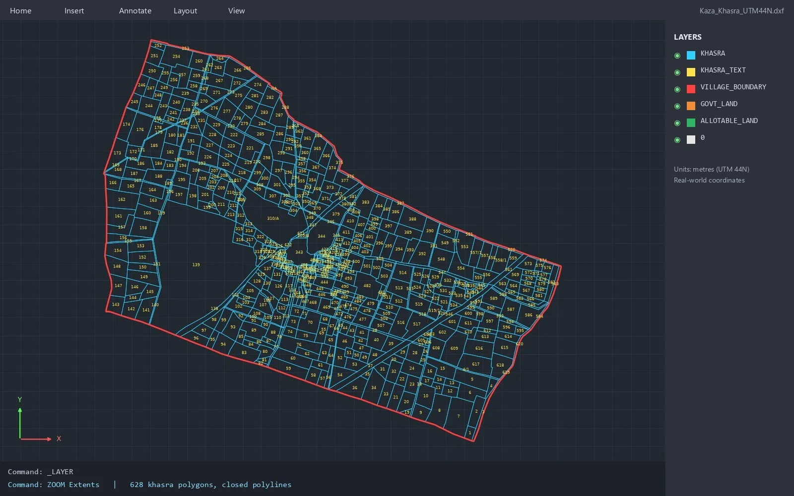

Khasra map in AutoCAD or BricsCAD: open the DXF / DWG, check UTM, measure and overlay a layout

Engineers who design solar plants, wind farms, roads and transmission lines work in CAD. For them a khasra map is useful only when it opens as real CAD geometry in the right place: every plot a closed polyline, every number a text object, and the whole village in ground coordinates. This guide shows how to open such a drawing in AutoCAD, BricsCAD or ZWCAD, how to check it, and how to use it with a project layout.
1. DXF or DWG - which one to open
DWG is the native drawing format of AutoCAD and is read by BricsCAD and ZWCAD as well. DXF is the open exchange version of the same drawing and opens in practically every CAD and GIS program, including the free LibreCAD and QGIS. If your CAD version is older and refuses a DWG, open the DXF - the geometry is the same.
2. First check: are the coordinates real?
A georeferenced khasra drawing is in UTM, in metres, in the zone of the area (for example zone 43 N for most of Rajasthan, 44 N or 45 N further east). Run ZOOM > Extents, then click any khasra corner and look at the coordinates in the status bar or with the ID command:
- The X value (easting) should have six digits, roughly between 160,000 and 840,000.
- The Y value (northing) should have seven digits for India, for example 2,7xx,xxx for a village near 25 degrees north.
- If you see small numbers such as 0 to 5,000, the drawing is in local or paper units and cannot be overlaid on a project layout.
Also set the drawing units to metres (UNITS command, insertion scale Meters) so that blocks and xrefs you bring in later land at the right size.
3. Layers
Open the Layer manager. A clean khasra drawing keeps the plot boundaries, the plot numbers and the village boundary on separate layers, so you can switch them on and off, lock them, or change colours for your print. Freeze the text layer when you only need the lines for design, and lock the boundary layers so that nobody moves a khasra by accident while drawing the layout.
4. Find a khasra number
Use FIND (Ctrl + F in most CAD programs) and type the khasra number. The view jumps to the text, and the closed polyline around it is the plot. Sub-divisions such as 125/1 and 125/2 are separate polylines with their own numbers, so search for the full number.
5. Measure area and distance
- Area: select the khasra polyline and open Properties - the area is shown in square metres. Divide by 10,000 for hectares, or by 4,046.86 for acres.
- Several plots: use the AREA command with the Add option, or a data extraction, to total a group of khasras.
- Distance: DIST between two points, or draw a polyline along a route and read its length in Properties.
Small differences between the CAD area and the area in the record of rights are normal: the record carries the surveyed area, while the drawing carries the area of the digitized shape.
6. Put your layout on the plots
- Make sure your layout is in the same UTM zone and in metres.
- Attach it with XREF (or INSERT it as a block) at insertion point 0,0,0, scale 1, rotation 0.
- Never move or rotate the khasra layer to make it fit the layout - if the two do not match, one of them is in the wrong coordinate system.
- Now you can see which plots each module table, turbine, crane pad, road or tower footing touches.
For a wind project, draw the setback circles around each turbine on top of the khasra lines; for a line route, offset the centre line by half the corridor width on both sides and list the khasras inside.
7. Common problems and fixes
- Text too small or too large: change the text height on the number layer for your plot scale; the geometry does not change.
- Hindi or regional text shows as question marks: assign a Unicode TrueType font (for example Arial or Mangal) to the text style.
- Drawing opens far away from your layout: one of the two files is in a different UTM zone or in local units - check both as in step 2.
- Gaps or overlaps between plots: a clean digitized map shares one line between neighbours, so a gap usually means a road, path or channel that has its own number.
8. Limits to keep in mind
A drawing made from the village land-record map is a planning base, not a legal survey. It is the right tool for layouts, land lists and route planning; where a boundary decides ownership or compensation, a DGPS or Total Station survey on the ground is the next step.
Compare the formats in KML vs DWG vs SHP for land teams, read FMB for wind projects and land parcel maps for transmission lines, see the state-wise khasra map pages, or download the free sample files below and open the DXF yourself.
Need khasra maps or a survey?
Georeferenced and digitized khasra maps in KML, DWG, SHP and Excel for 20 states, plus DGPS, Total Station, topographic and drone surveys. Single village orders welcome.